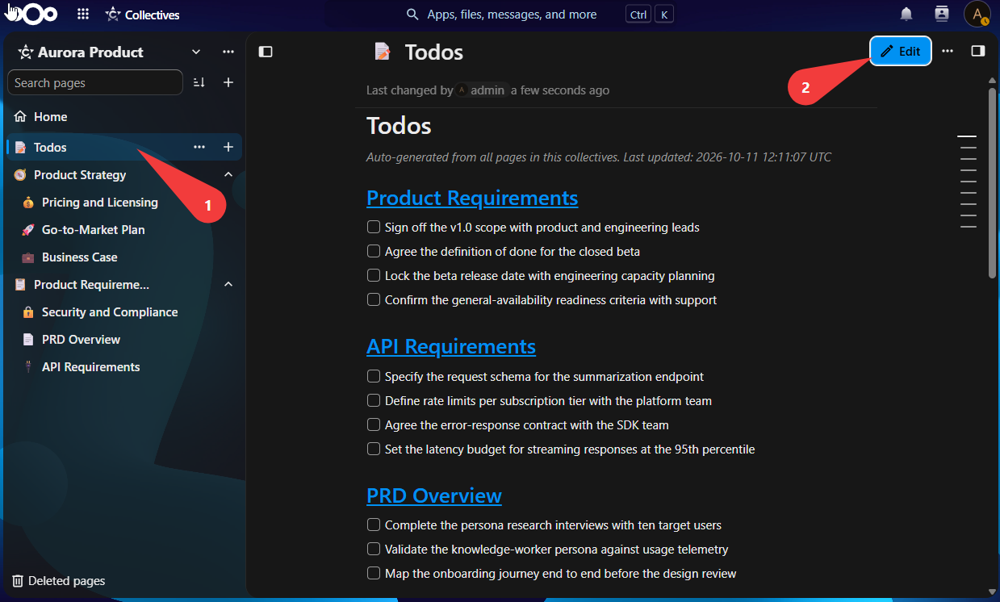
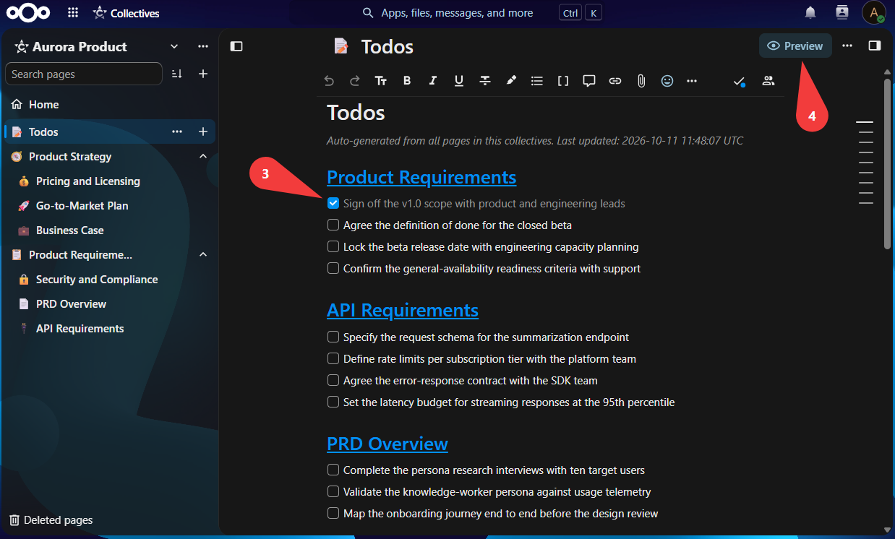
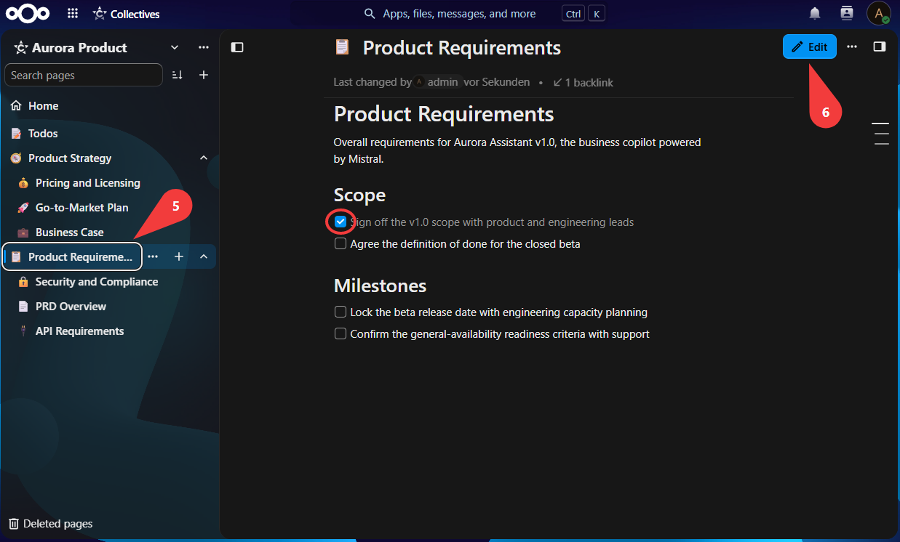
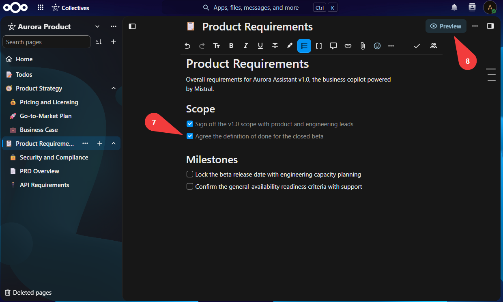
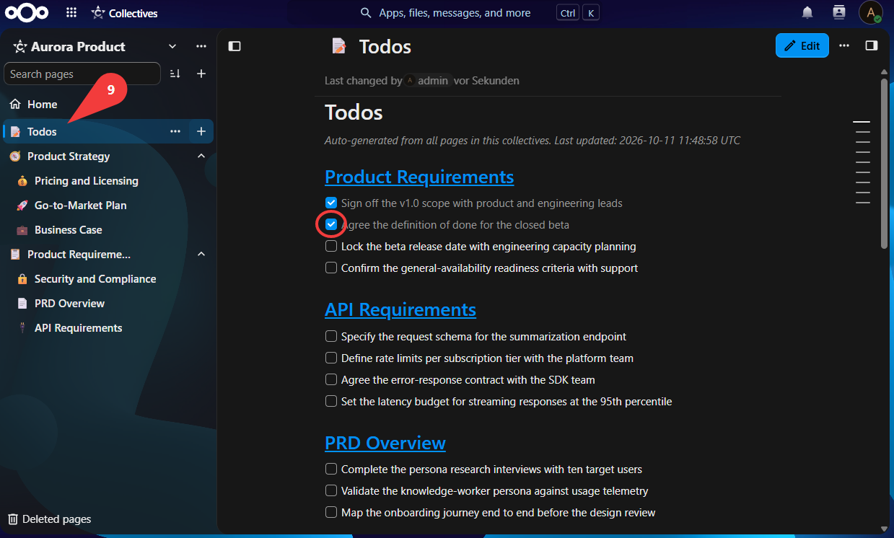
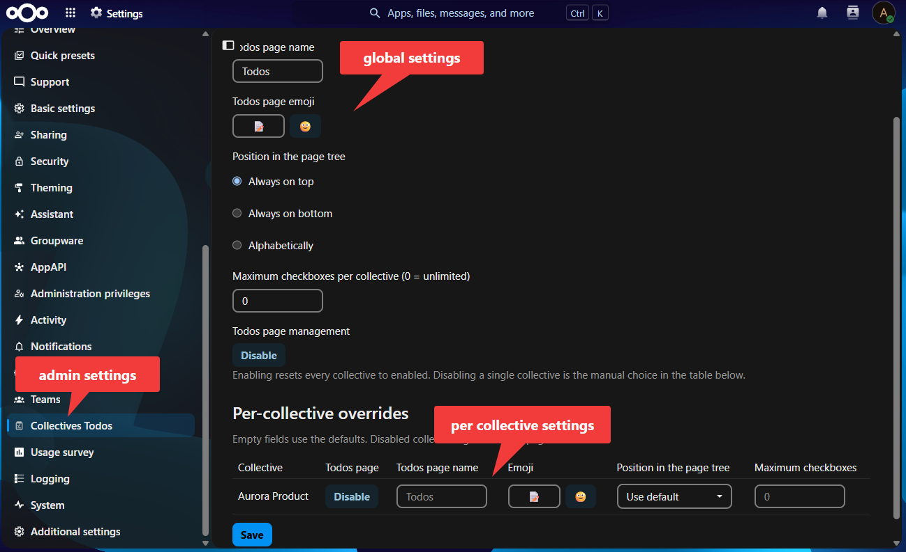

Nextcloud app
Every to-do from your Collectives, gathered on a single page
Collectives Todos collects all the checkboxes scattered across the pages of your Collectives onto one central Todos page — and keeps it up to date, in both directions.
Free & open source · AGPL-3.0-or-later · by deltadrai
- Write release notes
- Review pull request
- Publish the new page
What it does
No extra tools, no new place to look — it works right inside the Collectives you already use.
All to-dos in one page
Every checkbox from every page of a collective, grouped under a link that takes you straight to the page it came from.
Always up to date
Whenever a page is edited, renamed or deleted, the Todos page regenerates itself. You never maintain it by hand.
Two-way sync
Tick a task off on the Todos page and it is checked off on its source page too — one list, both directions.
Yours to configure
Admins choose the Todos page name, its position in the page tree and an emoji — and switch the app on or off, globally or per collective.
What it needs
Collectives Todos builds on the apps you already run.
Nextcloud
27 – 35
Collectives app
2.0.0+
PHP
8.0+
Watch it happen
The whole flow in half a minute — keep scrolling and the video plays with you: the Todos page, one of its source pages, and a tick that syncs in both directions.
Step by step
Taken from a live collective — from the auto-generated Todos page to a tick that syncs back to its source page.





